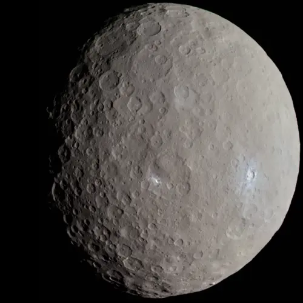

Ceres - Planeta Anão

Introdução e História
Ceres é um planeta anão localizado no cinturão de asteroides entre Marte e Júpiter, sendo o maior objeto nessa região e o primeiro a ser descoberto em 1º de janeiro de 1801 pelo astrônomo italiano Giuseppe Piazzi.
Inicialmente classificado como planeta, depois asteroide, e finalmente definido como planeta anão pela União Astronômica Internacional em 2006, Ceres tem sido objeto de interesse científico por sua composição incomum e seu papel na história da formação do Sistema Solar.
Características Físicas: Diâmetro, Massa e Órbita
Ceres tem um diâmetro de aproximadamente 940 km, sendo o maior corpo do cinturão de asteroides e representando cerca de um terço da massa total desse cinturão.
Ele orbita o Sol a uma distância média de cerca de 2,8 unidades astronômicas e completa uma volta em torno da estrela em cerca de 4,6 anos terrestres.
Uma rotação completa no seu eixo leva pouco menos de 9 horas, resultando em um dia curto em comparação com muitos outros corpos do Sistema Solar.
Geologia
Ceres possui uma superfície marcada por inúmeras crateras, mas surpreendentemente poucas delas são extremamente grandes, sugerindo processos geológicos capazes de “apagar” grandes impactos ao longo do tempo.
A composição superficial inclui áreas com depósitos brilhantes de sais e gelo, especialmente dentro de crateras como Occator e Haulani, que podem ser produtos de atividade criovolcânica ou de movimentos de brinas salgadas.
Essas características apontam para uma história geológica ativa, com evidências de que Ceres pode ainda liberar brinas internamente e apresentar fenômenos semelhantes a vulcões de gelo.
Missões Espaciais
A principal missão que estudou Ceres foi a espaçonave Dawn, da NASA, que entrou em órbita do planeta anão em março de 2015 após visitar o asteroide Vesta.
Dawn forneceu imagens detalhadas da superfície, mapeou sua composição e revelou características como os pontos brilhantes nas crateras e possíveis sinais de atividade geológica recente.
Atmosfera e Exosfera
Ceres possui uma exosfera extremamente tênue, com vestígios de vapor de água detectados em algumas regiões, possivelmente liberados pela sublimação dos gelos próximos à superfície ou por atividades internas.
Essa exosfera não é como uma atmosfera densa, mas representa uma camada muito fraca de partículas gasosas ao redor do planeta anão.
Potencial de Habitabilidade
- Água Líquida: Não há prova de água líquida presente hoje, mas há evidências de água e gelo em grande quantidade.
- Fonte de Energia: Energia interna moderada no passado pode ter criado condições temporárias favoráveis.
- Ingredientes Químicos: Compostos inorgânicos e minerais que podem ter suportado química pré-biótica no passado.
Pesquisas indicam que Ceres pode ter tido condições relativamente “habitáveis” em sua história antiga, com água líquida e energia disponível por longos períodos, embora não haja evidências de vida.
Curiosidades
Ceres contém depósitos brilhantes visíveis em várias crateras, que são alguns dos alvos de estudo mais intrigantes da missão Dawn.
O planeta anão tem massa suficiente para mantê-lo em forma quase esférica, diferenciando-o da maioria dos asteroides do cinturão.
Com tanta água congelada, Ceres é um dos corpos mais ricos em água do Sistema Solar interno, possivelmente com mais água total do que a Terra em termos de volume.
Origem do Nome
Ceres recebeu seu nome em homenagem a Ceres, a deusa romana da agricultura, grãos e colheitas, refletindo a importância simbólica da fertilidade e da abundância que a humanidade associava à agricultura desde a antiguidade.
A escolha do nome também segue a tradição de usar figuras mitológicas para designar objetos celestes, conectando nossa história cultural à exploração astronômica.
Referências
- NASA Science. Ceres. Disponível em: https://science.nasa.gov/dwarf-planets/ceres/ . Acesso em: 26 dez. 2025.
- NASA. Ceres Facts. Disponível em: https://science.nasa.gov/dwarf-planets/ceres/facts/ . Acesso em: 26 dez. 2025.
- Britannica. Ceres (dwarf planet). Disponível em: https://www.britannica.com/place/Ceres-dwarf-planet . Acesso em: 26 dez. 2025.